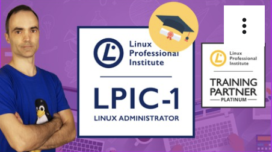

+3 años desarrollando software en producción.

Backend, Automatización & IA aplicada
Desarrollo sistemas en producción combinando Java, automatización y modelos de IA para optimizar procesos reales de negocio.
Soy desarrollador backend con base sólida en sistemas y experiencia en entornos productivos reales. Trabajo principalmente con Java y tecnologías modernas para construir soluciones mantenibles, automatizadas y orientadas a negocio.
Mi enfoque combina desarrollo backend, automatización de procesos y aplicación práctica de modelos de IA en entornos empresariales.
Me interesa especialmente la mejora continua de sistemas, la optimización de flujos documentales y el diseño de soluciones técnicas escalables.
+3 años desarrollando software en producción.
Aplicaciones utilizadas por gestores administrativos a nivel nacional.
Integración de modelos LLM en procesos reales.
Automatización de procesamiento documental.
Despliegues y mantenimiento en entornos Linux con CI/CD.
Stack: Java · Spring · Oracle · Jenkins · Linux
Participación en el desarrollo y evolución de una aplicación corporativa en producción utilizada por gestores administrativos.
Stack: Java 21 · Spring Boot · SQL · Arquitectura modular
Desarrollo de sistema de gestión completo para negocio físico real.
Stack: Python · OpenCV · PyMuPDF · LLM Vision · Procesamiento de datos
Sistema de extracción automatizada de datos desde documentos PDF técnicos.
Software Developer (Full Stack Java) · 09/2024 – Actualidad
Microsoft Junior Analyst · 03/2024 – 06/2024
Soporte IT · 06/2023 – 12/2023
Java · Spring Boot · REST APIs · SQL · Oracle · PostgreSQL · MySQL
OpenAI API · LLMs · Procesamiento de imagen · Extracción documental · Limpieza y estructuración de datos
Docker · Jenkins · Linux · CI/CD · Entornos self-hosted
HTML · CSS · JavaScript · Angular · Bootstrap
Formación Profesional Grado Superior · Nota media: 9,79
Especialización en: Programación orientada a objetos, desarrollo backend, bases de datos relacionales y arquitectura de aplicaciones.
Formación Profesional Grado Medio · Nota media: 8,82
Base sólida en: Administración de sistemas, redes y soporte técnico.
Optimización de pipelines documentales con IA.
Investigación en evaluación y fine-tuning de modelos.
Arquitecturas backend modernas con Java 21.
Automatización de procesos empresariales.
Mejora de rendimiento y mantenibilidad en sistemas en producción.
Si buscas un perfil técnico con experiencia real en producción y enfoque en automatización e integración de IA, estaré encantado de aportar a tu equipo.